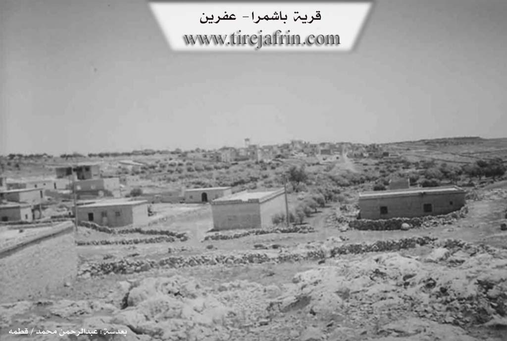

General Information
Nahiya (Subdistrict)
Nubl
Also Known As
Bashamra, Başemirê, Başemrê, باشمرة
Tribes
Omeriyan, Şerqiyan

Photos

Basic Information about Başemrê
Source: Ax û Welat
Etymology: The prefix "Ba" refers to wind, common in the Şêrawa region; "Şemr" is attributed to a historical resting place (cîhekî vehesê) for travelers between Heleb and Çiyayê Kurmênc
Caves: Şkefta hewar
Number of Caves: 40
Springs: Avban sor
Hills: Çiyayê Leylûn
Trees: Darê 'inabê
Wells: Sahrinca avê
Summaries
I. Summary from TirejAfrin Site (English) of Başemrê
Source: https://www.tirejafrin.com/site/kura%20afrin%20markaz-bashamra.htm
The following is stated in the book جبل الكرد (عفرين) دراسة جغرافية Çiyayê Kurmênc (Efrîn): A Geographical Study by د. محمد عبدو علي Dr. Mihemed Ebdo Elî: Başemr, Başemre /307 people, 38 km, 520 m/:
It means the house of the sender or the delegate in Syriac, /E. Hecar, Church of Mar Simaan, p. 176/. As for the professor of the Syriac language at the University of Heleb, Xûrî Bersûm Eyûb, he says that it means "place of shooting arrows," and the place of the Razbanj, which is a plant with yellow flowers and long green grains /p. 58/. El Esedî quotes Bavê Şelhet saying that the name is from Aramaic: Beit Şemra, meaning: The Messengers. A clear difference is noted between these opinions, which weakens all of them. The name in its current form is close to the Kurdish pronunciation, and those who say it is a Kurdish designation derive it from Başmr, meaning "The Good Man" (Baş + mr).
It is a small village located on one of the peaks of Çiyayê Lêlûn, Şêrwan section. Neighboring it are remains of many ancient archaeological buildings. It was attached in the year 1975 to the Ezaz area.
The following is stated in the book: عفرين .... نهرها وروابيها الخضراء Efrîn... Her River and Her Green Hills by the writer عبدالرحمن محمد Ebdulrehman Mihemed from the village of Qetme: Başemra is a village in Çiyayê Simaan, belonging to the sub district of the villages of the center and region of Efrîn, Heleb governorate. It is a small village located on the southern slope of Çiyayê Simaan and Lêlûn.
The village is divided into two sections, eastern and western. It is bordered to the north by a rugged mountain range of rocks, two watercourses, and the village of Zoqê Kebîr; to the south by a rugged mountain range and the village of Bardxan and Qubtan el-Cebel; to the east by a rugged mountain range and the village of Tamûra; and to the west by a rugged mountain range and the village of Şêx Eqîl and Fafertîn.
The number of its houses reaches about 100 houses, and the age of the village is about 300 years. Its dwellings are old and wooden, while the modern ones are of stone and cement. An electricity network is available there. The village is reached via a paved road that penetrates the village in its center. It contains a primary school and a mosque. The residents drink from pools and cisterns. Its inhabitants work in the cultivation of grains and the raising of sheep and cows. Currently, it has been annexed to the Nubul sub district, Ezaz region, since the year 1980.
Preparation and Execution:
Director of the Tirej Efrîn site: Ebdulrehman Hacî Osman
20/12/2013
Sources:
- Book: جبل الكرد (عفرين) دراسة جغرافية Çiyayê Kurmênc (Efrîn): A Geographical Study by د. محمد عبدو علي Dr. Mihemed Ebdo Elî.
- Book: عفرين .... نهرها وروابيها الخضراء Efrîn... Her River and Her Green Hills by عبدالرحمن محمد Ebdulrehman Mihemed.
II. Summary of Başemrê from Ax û Welat
Source: https://www.youtube.com/watch?v=otuVzQLqXvw
The village of Başemrê is situated on the heights of Çiyayê Leylûn (also referred to as Çiyayê Lîlûn) within the Şêrawa district. Geographically positioned between Efrîn and Heleb, the village serves as a strategic point overlooking the surrounding plains. The name Başemrê is derived from two components: "Ba," meaning wind—a common prefix for villages in this windy corridor like Basûfan—and "Şemr," which residents and local historians attribute to a historical "place of rest" (cîhekî vehesê). In the past, the site featured a central cistern (Sahrinca avê) where travelers moving between Heleb and Çiyayê Kurmênc would stop to drink and rest.
The social structure of Başemrê consists primarily of two tribes: the Şerqiyan and the Omeriyan. The Omeriyan tribe migrated to Başemrê from the nearby Gundê Mezin. Historically, the population of both tribes was Êzîdî. However, approximately 50 years ago (around 1970), the village elders decided to convert to Islam due to the pressures of living as a minority surrounded by Arab neighbors. Despite this conversion, they maintain close ties with neighboring Êzîdî villages such as Burc Qaz, Basûfan, and Bê.
Başemrê is distinguished by its geology and traditional economy. The village sits on rocky terrain (latan) containing approximately 40 large caves. Unlike the solid rock of neighboring areas, the caves in Başemrê contain "hewar"—a type of white marl or chalky earth. For generations, residents and people from surrounding villages like Kibêşînê and Birc Heyder excavated this hewar to whitewash their homes before the advent of cement. The village is also renowned in the Şêrawa region for its culinary specialty, kakê tenûrê, a specific type of tandoor bread or cookie made with oil, sesame, and sugar, often served to guests with cheese and tea.
The village possesses a rich tradition of herbal medicine. Elders, such as the late Kalê Xelo, passed down knowledge of local flora. Residents treat kidney stones using the boiled roots of the darê 'inabê (jujube tree) and cure wounds using a paste made from Gula Şevê (Night Flower). Culturally, the village maintains a legacy of music and dengbêj (bards), preserving folklore and songs about local history, including the tale of Meyremê.
In the context of the recent conflict, Başemrê is a frontline village. It has faced attacks from groups like Cebhet el Nusra and the Free Army, and later faced encirclement. Despite displacement events, the residents have returned and remain defiant. The village honors nine local martyrs, including Şehîd Çekdar, Şehîd Rustem Şêrawa, and Şehîd Avreş, who died defending their land. Before the establishment of the current commune system, the village was historically managed by a council of seven elders and a muxtar, notably Hilo, who maintained a guest room for the community over 70 years ago.
II. Summary of Başemrê from Ax û Welat 2
Source: https://www.youtube.com/watch?v=dwZ5zuBAH9Q
The village of Başemrê is situated on the Lêlûn mountain range in the Şêrawa district, positioned strategically on the border between Efrîn and Heleb. Due to this location, the village has faced attacks from "gangs" (çete) since the beginning of the conflict, though the residents are noted for their refusal to abandon their land and homes.
Culturally, Başemrê holds a specific reputation within the Şêrawa region for the production of kak or kakê tenûrê, a traditional dry bread or cookie. Residents Emîra and Zekiye explain that while other villages did not historically maintain this tradition, it was a staple in Başemrê, particularly prepared by their ancestors (kal û pîr) for guests arriving from outside the village. The preparation involves a yeast based dough, formerly leavened with sourdough from neighbors but now using instant yeast, sometimes sweetened with sugar. The baking process is distinct, utilizing a tenûr (tandoor oven) heated with wood or olive husks (şikol) rather than the methods used in other parts of Efrîn.
In addition to kak, the villagers maintain other culinary traditions tied to the agricultural cycle. Following the wheat harvest (pale), specific sweets such as Şelek and Zengilok are prepared. The daily diet includes traditional staples like meat, bulgur soup (girar), rice, and stew (tirşik). Residents express a strong attachment to their culinary heritage, noting that while they can buy market bread, they prefer the taste of their own nanê tenik baked on a sêl (griddle).
The social atmosphere of Başemrê is characterized by a blend of hospitality and political resilience. The transcript concludes with songs that voice distinct political allegiances, referencing figures such as Apo, Ebdula, and Ocalan, and expressing solidarity with other Kurdish regions including Koban, Dêrik, Cizîr, Kerkûk, Şernax, and Amed. These songs frame the village's identity within a broader narrative of resistance against perceived enemies (Romî) and loyalty to the Kantona Efrîna.
Transcriptions and Subtitles
| Source | Video | Subtitles | Transcript |
|---|---|---|---|
| Ax û Welat 1 | Watch Video | Download SRT | View Transcript |
| Ax û Welat 2 | Watch Video | Download SRT | View Transcript |
Foundation/Origin Information of Başemrê
The village is composed of two main tribes, the Şerqiyan and the Omeriyan, the latter having migrated from the nearby village of Mezin. A significant event in its history was the conversion of its people from Yazidism to Islam.
Source: Ax û Walat Transcript
Possible Village Name Meaning of Başemrê
Multiple theories: 1) Syriac: "house of the messenger or the envoy". 2) Syriac: "place of arrow sharpening". 3) Aramaic: "Beit Shamra" meaning "the messengers". 4) Kurdish: "Başmêrê" meaning "the good man".
Source: TirejAfrin Site
Its name is said to originate from its high elevation and its historical role as a resting place for ancient peoples traveling from the Kurmanc mountains.
Source: Ax û Walat Transcript